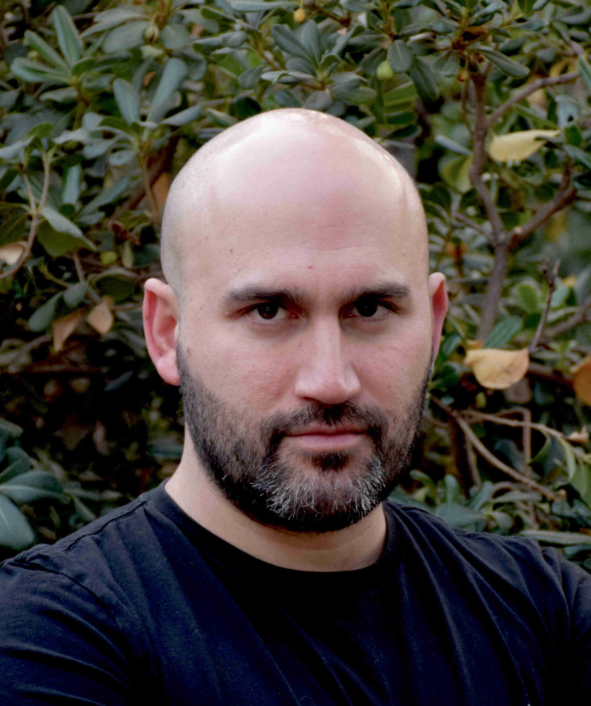

Ciclos de Charlas ReLeLa
Las (im)posibilidades de los Modelos del Lenguaje
- Lugar: Auditorio Ramón Picarte DCC-Uchile.
- Dirección: Avenida Beauchef 851, Piso 3, Edificio Norte, Santiago.
- Organización: RELELA, DCC Uchile.
- Patrocinadores: CENIA, IMFD, MineDUC.
- Inscripciones aquí.
Cronograma
-
Miércoles 3 de mayo 4PM Presentador: Jorge Ortiz DCC Uchile Título: ¿Puede ChatGPT conquistar el mundo? Lenguaje humano vs lenguaje de máquina
-
Miércoles 10 de mayo 4PM Presentador: Felipe Bravo-Marquez DCC Uchile, IMFD, CENIA Título: Un recorrido por los Modelos de Lenguaje: desde Shannon a GPT-4
-
Miércoles 17 de mayo 4PM Gabriela Arriagada, IEA, IMC, PUC, CENIA Título: Desafíos éticos actuales a la luz de la revolución sociotecnológica del GPT3 y 4
-
Miércoles 24 de mayo 4PM (ChatGPT en la Industria, posibilidades y proyecciones, dos charlas de 15-20 minutos) Jorge Pérez CERO: “IA sin farándula” Manuel Peña, Fintual: “GPT y Agentes, Como Conversar con tu App”
-
Miércoles 31 de mayo 4PM Título: Panel de Discusión - Alcances y límites de los modelos de lenguaje (cada panelista expone una idea en 5 minutos y después ronda de conversación) Panelistas: Cristian Buc por CENIA (mirada AI/neurociencia), Magdalena Saldaña PUC/IMFD (mirada comunicaciones), Martín Cáceres (MINEDUC mirada desde la educación), Felipe Tobar IDIA Uchile (mirada desde machine learning) Moderador: Claudio Gutierrez
Expositores
Felipe Bravo-Marquez

Profesor asistente en el Departamento de Ciencias de la Computación de la Universidad de Chile, Investigador Asociado del Centro Nacional de Inteligencia Artificial (CENIA) e Investigador Joven del Instituto Milenio Fundamento de los Datos (IMFD).
Realizó su doctorado en el grupo Machine Learning de la Universidad de Waikato, Nueva Zelanda, donde también trabajó como Research Fellow durante dos años. Sus intereses de investigación abarcan las áreas del procesamiento del lenguaje natural (NLP), el aprendizaje automático (ML), la inteligencia artificial (AI) y la recuperación de información (IR).
Jorge Ortiz Fuentes

Data Scientist y Lingüista
Licenciado en Letras Hispánicas de la Pontificia Universidad Católica y Magíster (c) en Ciencias de la Computación de la Universidad de Chile. Sus áreas de investigación y desarrollo abarcan el procesamiento de Lenguaje Natural, la Ciencia de Datos y la Lingüística.
Jorge Ortiz Fuentes

Profesor Asistente, Instituto de Ética Aplicada (IEA) & Instituto de Ingeniería Matemática y Computacional (IMC), PUC, Investigadora CENIA. Candidata a Doctor en Filosofía y Ética Aplicada de la Universidad de Leeds, Inglaterra. La mayor parte de su trabajo se centra en la ética aplicada. Actualmente investiga sobre sesgo, equidad y explicabilidad en IA y ciencia de datos.
Jorge Peréz
Co-Fundador de Cero.ai.
Cero.ai es una empresa que apoya a que los pacientes lleguen a sus citas a la hora y preparados. Actualmente dirige el desarrollo en inteligencia artificial del producto, y está a cargo de las ventas a instituciones públicas de salud. Antes de cero.ai fue académico e investigador universitario por más de 15 años (DCC Uchile) y estudió un PhD en Computación (PUC). Su área principal de investigación es el Procesamiento de Lenguaje Natural y Redes Neuronales Profundas.
Manuel Peña
Senior Portfolio Manager en Fintual, Ingeniero Civil Industrial de la Universidad de Chile, Chartered Financial Analyst (CFA) y Master en Applied Analytics de la Universidad de Columbia en Nueva York. Ha ejercido cargos en la industria financiera en áreas de análisis, desarrollo y gestión de portafolios para clientes privados y fondos de pensiones, además de haber realizado emprendimientos en áreas de analytics e inteligencia artificial. Manu también es Regional Chair del Columbia SPS Career Coalition y miembro de la comisión de Inteligencia Artificial y Big Data del Instituto de Ingenieros de Chile.
Cristián Buc
Investigador CENIA: Jefe del grupo científico @ CENIA. PhD en Neurociencias Computacionales Cognitivas de la Universidad Libre de Bruselas, postdoctorados en Ghent University y Brown University. Su área de investigación emerge de la intersección entre Neurociencias e IA. En particular, su trabajo se centra en el desarrollo de redes neuronales inspiradas en funciones y mecanismos cerebrales.
Magdalena Saldaña

Profesora Asistente de la Facultad de Comunicaciones de la Pontificia Universidad Católica de Chile e investigadora del Instituto Milenio Fundamento de los Datos.
Doctora en Periodismo y Comunicación de Masas, University of Texas- Austin (Estados Unidos). Magíster en Investigación Social y Desarrollo, Universidad de Concepción. Periodista, Universidad de Concepción. Sus áreas de investigación son: Medios digitales, comunicación política, opinión pública y estudios latinoamericanos.
Felipe Tobar

Profesor Asociado, Universidad de Chile, Director, Iniciativa de Datos e Inteligencia Artificial, Uchile, Investigador, CMM & AC3E.
Su investigación se sitúa entre el Aprendizaje Automático Estadístico y el Procesamiento de Señales, incluyendo inferencia aproximada, inferencia no-paramétrica bayesiana, estimación espectral y transporte óptimo computacional.
Martín Caceres
Director del Centro de Innovación MINEDUC. Licenciado en Física y Doctor en Ciencias de la Ingeniería de la Pontificia Universidad Católica de Chile.
Ha trabajado como docente en el sistema escolar enseñando física, electrónica y robótica, y en el sistema universitario ha dictado cursos de humanidades digitales y metodologías innovadoras de enseñanza y aprendizaje. Además, ha trabajado en asesorías a escuelas y universidades y en política pública relacionada con innovación pedagógica en Chile y en el extranjero.